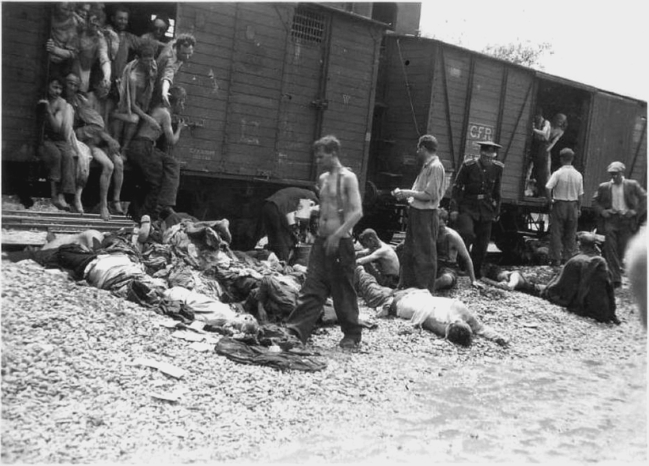

Introducere
Holocaustul a fost genocidul sistematic și birocratic al aproximativ șase milioane de evrei europeni și a altor grupuri, inclusiv romi, persoane cu dizabilități, polonezi și prizonieri de război sovietici, de către regimul nazist și colaboratorii săi. Acest eveniment a avut loc între anii 1941 și 1945, sub conducerea lui Adolf Hitler.
Viața în Lagărele de Concentrare
Lagărele de concentrare, cum ar fi Auschwitz, Dachau și Treblinka, au fost locuri de suferință inimaginabilă. Prizonierii erau supuși unor condiții inumane, muncă forțată, foamete și tortură. Mulți dintre ei au fost uciși în camerele de gazare sau prin alte metode brutale.
Supraviețuitori și Poveștile Lor
Poveștile supraviețuitorilor Holocaustului sunt mărturii puternice ale rezistenței umane și ale speranței în fața adversității extreme. Oameni precum Elie Wiesel, autorul cărții „Noaptea”, au reușit să supraviețuiască și să împărtășească lumii ororile trăite pentru a preveni repetarea unei asemenea tragedii.
Rezistența în Timpul Holocaustului
Deși multe persoane au fost supuse terorii naziste, au existat acte de curaj și rezistență. Grupuri precum Partizanii Evrei au luptat împotriva naziștilor, iar persoane precum Oskar Schindler și Raoul Wallenberg au salvat mii de vieți prin acțiuni eroice.
Rolul Diferitelor Țări și Organizații
Diverse țări și organizații au avut roluri diferite în timpul Holocaustului. Unele națiuni au colaborat cu regimul nazist, în timp ce altele au oferit refugiu evreilor. Organizații internaționale, cum ar fi Crucea Roșie, au încercat să ofere ajutor umanitar în măsura posibilităților.
Statistici
Aproximativ 1,1 milioane de copii au fost uciși în Holocaust.
Numărul total al victimelor Holocaustului este estimat la șase milioane de evrei și alte cinci milioane de persoane din alte grupuri.
Lagărul de concentrare Auschwitz-Birkenau a fost locul unde au murit peste un milion de oameni.
Elie Wiesel: „Pentru cel care a fost în lagărele de concentrare, moartea este o prezență permanentă. Moartea este ceva familiar, ca un prieten pe care îl cunoști bine.